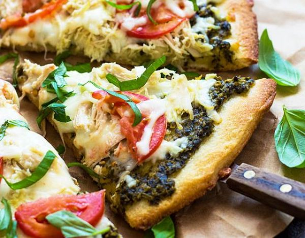

Pizza Pesto

delicious pesto pizza recipe!
This recipe is perfect for a delicious pizza.
Easy to make you only need to replace the tomato
for pesto sauce. The contrast with a good pecorino
cheese and mozzarella with the pesto and some basil
is amazing. Highly recommended to try this recipe!
Ingredients:
- 1 (12 inch) pre-baked pizza crust
- ½ cup pesto
- 1 ripe tomato, chopped
- ½ cup green bell pepper, chopped
- 1 (2 ounce) can chopped black olives, drained
- ½ small red onion, chopped
- 1 (4 ounce) can artichoke hearts, drained and sliced
- 1 cup crumbled feta cheese
- Preheat oven to 450 degrees F (230 degrees C).
- Spread pesto on pizza crust. Top with tomatoes, bell peppers, olives, red onions, artichoke hearts and feta cheese.
- for 8 to 10 minutes, or until cheese is melted and browned.